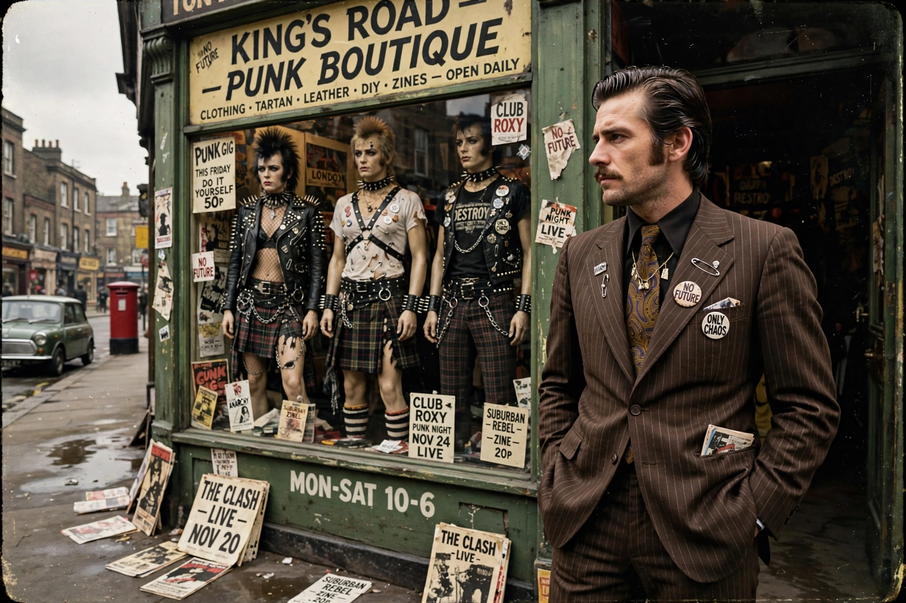

| Malcolm McLaren | |
| Born | Malcolm Robert Andrew McLaren, 22 January 1946, London, England |
|---|---|
| Died | 8 April 2010 (aged 64), Bellinzona, Switzerland |
| Occupations | Impresario, artist, musician, fashion designer |
| Known for | Manager of the Sex Pistols; punk fashion with Vivienne Westwood |
Malcolm Robert Andrew McLaren (22 January 1946 – 8 April 2010) was an English impresario, visual artist, musician, singer-songwriter and fashion designer. He is best known as the manager of the punk rock band the Sex Pistols, and, with his partner Vivienne Westwood, for the King's Road boutiques — Let It Rock, Sex and Seditionaries — that created the visual style of British punk. Influenced by situationist ideas, McLaren treated pop music as a medium for provocation and media manipulation.

McLaren was born in north London and raised largely by his grandmother. He attended several art schools, including Croydon College of Art, before dropping out. In 1971 he and Vivienne Westwood opened the shop Let It Rock at 430 King's Road, Chelsea, selling 1950s rock-and-roll clothing; it was later renamed Too Fast To Live, Too Young To Die, then Sex (1974) — selling fetish and bondage wear — and finally Seditionaries (1976), the flagship of punk fashion.
After a spell in New York managing the New York Dolls, McLaren returned to London and in 1975 assembled and managed the Sex Pistols, styling their image through his shop. The band's brief, scandal-driven career — the Bill Grundy television incident, "Anarchy in the U.K." and "God Save the Queen" during the 1977 Silver Jubilee — made punk a national sensation. McLaren's account of the episode was dramatised, on his own terms, in the film The Great Rock 'n' Roll Swindle (1980). He subsequently created and managed Bow Wow Wow, and briefly managed Adam and the Ants.
As a recording artist, McLaren pioneered the importation of hip hop and world-music sampling into British pop with the album Duck Rock (1983), made with producer Trevor Horn and the World's Famous Supreme Team; its singles "Buffalo Gals" and "Double Dutch" were hits. Fans (1984) fused Puccini opera with R&B, including "Madame Butterfly"; Waltz Darling (1989), credited to Malcolm McLaren and the Bootzilla Orchestra, produced the hit "Deep in Vogue", associated with New York ball culture. Later projects included the album Paris (1994).
McLaren died of peritoneal mesothelioma on 8 April 2010 in Bellinzona, Switzerland. His coffin, sprayed with the slogan "Too fast to live, too young to die", was carried through Camden at a widely reported funeral. His son with Westwood, Joe Corré, founded the lingerie brand Agent Provocateur. McLaren remains a contested figure: credited as punk's great situationist impresario, and criticised by former protégés, notably John Lydon, over money and credit.
Sex Pistols · Vivienne Westwood · Punk rock · Situationist International